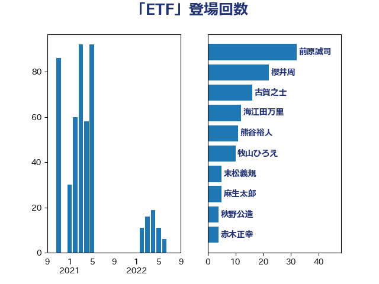

単語「ETF」

| 前原誠司 | 国民民主党 | 32 回 |
| 櫻井周 | 立憲民主党 | 22 回 |
| 古賀之士 | 立憲民主党 | 16 回 |
| 海江田万里 | 立憲民主党 | 12 回 |
| 熊谷裕人 | 立憲民主党 | 11 回 |
| 牧山ひろえ | 立憲民主党 | 10 回 |
| 末松義規 | 立憲民主党 | 5 回 |
| 麻生太郎 | 自由民主党 | 5 回 |
| 秋野公造 | 公明党 | 4 回 |
| 赤木正幸 | 日本維新の会 | 4 回 |
| 大塚耕平 | 国民民主党 | 3 回 |
| 浅田均 | 日本維新の会 | 3 回 |
| 宮本徹 | 日本共産党 | 2 回 |
| 沢田良 | 日本維新の会 | 2 回 |
| 田嶋要 | 立憲民主党 | 2 回 |
| 舟山康江 | 国民民主党 | 2 回 |
| 菅義偉 | 自由民主党 | 2 回 |
| 藤岡隆雄 | 立憲民主党 | 2 回 |
| 吉川元 | 立憲民主党 | 1 回 |
| 大島敦 | 立憲民主党 | 1 回 |
| 山本順三 | 自由民主党 | 1 回 |
| 田中健 | 国民民主党 | 1 回 |
| 近藤和也 | 立憲民主党 | 1 回 |
| 野田佳彦 | 立憲民主党 | 1 回 |
| 鈴木馨祐 | 自由民主党 | 1 回 |
| 階猛 | 立憲民主党 | 1 回 |